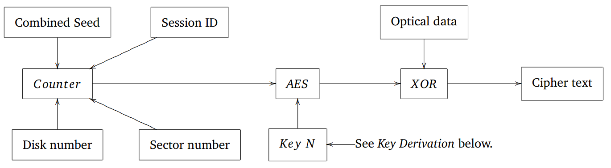

This document describes disk encryption implemented using a combination of software and FPGA.
--Data-->FPGA-->Disks
|
Microcontroller
The data was encrypted using AES, in counter mode, with flexible key width.
For various reasons, we did not use an authenticated encryption mode.
A FPGA was responsible for encryption, to keep up with the high data rate. Control software running on a microcontroller was responsible for loading up the AES key schedule during bulk streaming operations.
During normal operations, the microcontroller went through the FPGA to access the disks. Software running on the microcontroller was responsible for managing the disks otherwise.
We encrypt all data before writing to disk. There are two reasons for doing this:
We begin by describing how data flows through the system, and then how quick erase and secure transport are implemented.

This is a simplified way of looking at encryption: a function is given data from a disk, and it encrypts that data and writes it out. In reality, this done in parallel by the FPGA.
Encrypt_Disk_Data (Meta : Metadata,
Sess : Session_Info,
D : int, -- disk number
Data : UINT128[])
-- Depending on Meta.Mode, this will either read a key
-- from disk, or read a key from the disk and combine it
-- with a key from removable storage.
Key : UINT128 := Get_Disk_Key (Meta, D);
-- Initialize encryption context using the given key.
Ctx : Aes_Context_Type := AES_Initialize (Key);
-- The counter is a 128-bit value that is derived using:
-- - The disk seed for disk D, which was originally derived
-- from the disk serial number.
-- - The session seed, which is a random 64-bit number,
-- chosen session creation.
Counter := Initialize_Counter (Meta, Sess, D);
For I = 0 to length (Data) loop
Increment_Counter (Counter);
E : UINT128 := AES_Counter_Encrypt (Ctx, Counter, Data[I]);
Disk_Write (D, I, E);
End;
Where:
UINT128 is an unsigned 128-bit quantity.Data is an array of 128-bit values.Get_Disk_Key, AES_Initialize, AES_Counter_Encrypt,
Initialize_Counter, Increment_Counter, and Disk_Write
are external functions.A formal security proof is not presented here. However, it is noted that the security of data on disks depends entirely upon:
Counter
above.Encryption Primitives Used.Counter mode weaknesses we talk about this some more.We assume that the recorder operates in a secure environment. Thus there are no protections against physical attacks.
(REMOVED)
The following encryption primitives are used. We also given some implementation details:
C programming language) is used by the software to encrypt metadata written to disk.Software Entities).Software Entities).Entropy in an embedded environment is a difficult problem. The system may be rebooted frequently and the random bytes may be needed soon after a reboot.
(REMOVED)